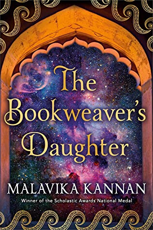
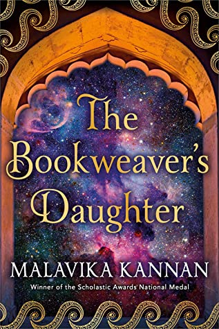

The Bookweaver's Daughter
May 10, 2021
I really, really wanted to like this book, as there are so few books out there that revolve around the magic and cultures outside of Western perspectives.
I did enjoy reading the prose itself, as Kannan has a way with words where I would often read phrases and go "oh, wow" while reading it.

SPOILERS AHEAD
However, there is a lot to be desired from the actual story itself. The execution of this promising idea needs work - there were entirely too many times where I would read a scene and go "how convenient for Reya," and these deus ex machinas happened about every ten pages.
Avatar: The Last Airbender clearly was a huge influence on the author, and it shows - there were dozens of scenes in this book that clearly took inspiration, from threatening Reya's friend Nina to try to get Reya to perform magic under duress (a parallel to threatening Katara to get the Avatar state, especially given the queer undertones the two characters have) to the villain's son claiming to need to capture the main character to "regain [his father's] favor" (Zuko constantly talking about restoring his honor by capturing the Avatar).
Having inspiration from other works is perfectly fine, but I found that this book read as a discount version of Avatar's storytelling, and that was painful. There are also many plot holes, including the family that Reya magically remembers she has or finds out that are still alive throughout the book. I also find it unbelievable that everyone that Reya lashed out to would not get angry back at her for the most part, even when she was saying that she feels Nina is luckier to have never known and felt love from her parents than to have known and lost, a statement that feels particularly egregious given that it was said in response to Nina telling Reya how lucky she was to have been loved by her father while Nina is an orphan.
There were also phrases such as "naan bread" which felt annoying to me, even as someone who isn't Indian. Naan is bread, and the fact that they're saying "bread bread" just leads me to believe that this book is written for a primarily white audience, Kannan choosing to "other" her own culture in order to make it more palatable.
In addition to this, while reading the reviews from Indian OwnVoices reviewers, I have learned that the villains in this book are from a culture that is a thinly veiled reference to Islam and there are a lot of events that seem to draw inspiration from historical events in the Kashmir region, a conflict which is still going on today and has resulted in the persecution of thousands of Muslims. While Kannan is an OwnVoices author, she now has a platform and needs to make sure she's not contributing to a narrative that is actively still causing harm to real-life groups. I hope she takes the time to hire a sensitivity reader next time, and as such, I cannot creatively support an author who elected to demonize Islamic cultures and ethnic groups. Because I am not an OwnVoices reader, here some reviews by OwnVoices readers that explain the complexities of these events in a much better way than I can: Chaipters and Vee Reading .
Overall, I think this book had promise but was not ready to be published.
A thank you to Tanglewood Publishing and NetGalley for the ARC.

More about The Bookweaver's Daughter here:
 

Title:The Bookweaver's Daughter
Author: Malavika Kannan
In the ancient Indian kingdom of Kasmira, stories don’t begin with “once upon a time.” Instead, Kasmiris start a woman’s story with those who came before her: her parents, grandparents, ancestors. For fourteen-year-old Reya Kandhari, her story always starts the same: with the fabled line of Bookweavers, tracing centuries back to the lost Yogis—the mythical guardians of Kasmiri culture who created the world itself. As a result, Reya’s entire life has been shaped by words. Words of mystique and mythology. Words of magic that allow her father, the Bookweaver, to bring his stories to life. Words of power that make him the target of tyrants who will stop at nothing to destroy magic in Kasmira.